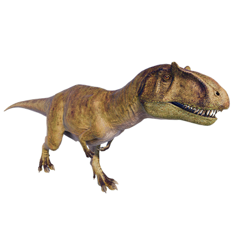

Useful Website
Metriacanthosaurus is a genus of carnivorous theropod that existed during the Late Jurassic period. Named after the spines on its vertebrae – the name translates to ‘moderately-spined lizard’ – Metriacanthosaurus can grow up to eight metres in length and over a tonne in weight, and preys on large herbivores. Despite its relatively large size, Metriacanthosaurus can reach speeds of up to 20mph.
